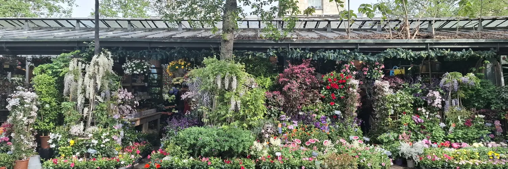

Sou doutorando em Ciências Sociais na UNESP, em Araraquara, com bolsa da FAPESP e orientação de Maria Aparecida Chaves Jardim. Minha tese estuda como flores e plantas ornamentais são classificadas e avaliadas no comércio e por quem as cultiva. A defesa está marcada para março de 2027.
Sou bolsista da FAPESP desde 2016. Entre 2025 e 2026 passei um ano no IDHE.S, na ENS Paris-Saclay, como pesquisador visitante, com Frédéric Lebaron. Uso a Análise Geométrica de Dados para construir espaços sociais.
Meu próximo projeto, uma proposta de pós-doutorado na UFSCar com Silvio Eduardo Alvarez Candido, trata de quem produz a política ambiental federal no Brasil.
lucas.vasques@unesp.br Currículo (PDF) Lattes ORCID Google Acadêmico GitHub LinkedIn

Publicações selecionadas
- 2025
Governar pelo afeto: emoções e poder simbólico no discurso empresarial da revista ExameEstudos de Sociologia 30(3), 1283–1300.
- 2024
Intimidade e mercado no Instagram: trabalho relacional como estratégia de denegação do econômicoMaria Chaves Jardim, Luana Estela Di Pires e Lucas Flôres Vasques. Sociologia & Antropologia 14(2), e230068.
- 2021
Emoções e Sociologia EconômicaLucas Flôres Vasques e Maria Chaves Jardim. Ensaios 18, 142–164.